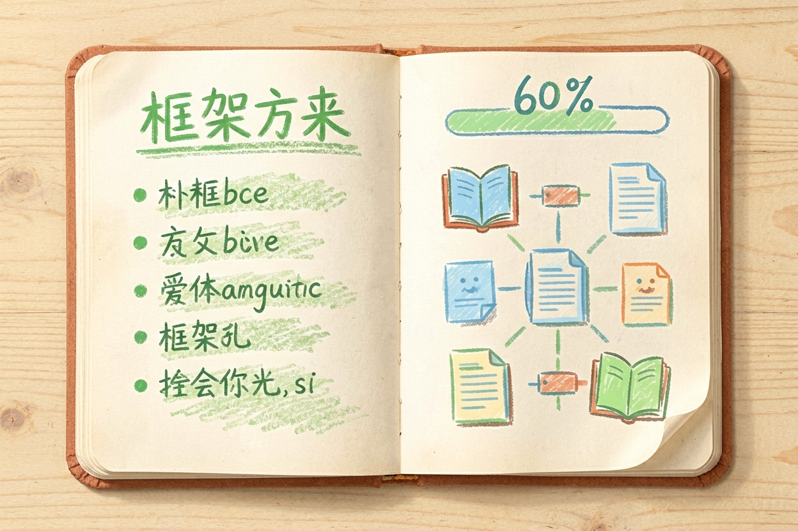

秘塔 AI 搜索好用吗？找资料场景实际测试 — Learntide
它更像一位替你翻完几十个网页的助手，负责铺线索，不负责替你拍板下结论。
秘塔 AI 搜索好用吗：它替你省掉哪一步
秘塔 AI 搜索好用吗，先看它想替你省掉什么。普通搜索给一堆链接，点开、比对、摘要都归你。它把这三步合并，直接给一段带脚注的答案。
省下来的是翻页时间。经常写综述、做背景调研的人，最能感觉到这笔账。
它的定位偏检索式回答。拿它闲聊会觉得寡淡，拿它查资料就顺手了。
提问模板
主题 + 时间范围 + 资料类型 + 输出格式
例：2024 年以来 国内预制菜行业 政策文件 列出要点并标注出处
追问：把第 3 条的原始文件名、发布单位、发布日期单独列出来找资料时的实际体验

实测下来最舒服的是学术和行业资料。给一个题目，几十秒就能铺出框架，每句话后面挂着编号，点开就是原文。
开题背景、竞品调研、政策梳理这类活儿，它能把你从零推到六成。剩下四成靠你判断。
几档检索深度差别明显。日常问题用最快那档就够，深度档会多读几十个来源，等待时间也翻几倍。
中文资料的覆盖比多数国外工具厚。学术库、公众号、机构网站的内容都能带出来，做国内选题这点很关键。
输出形式也省事。它会顺手生成大纲和脑图，拿去当汇报骨架刚好，细节再自己填。
出处和可信度怎么核
带出处不等于结论成立。这是最容易掉进去的坑。
常见毛病有两种。一是引用真实存在，但跟那句话对不上；二是几个来源互相转载，看着像三份证据，其实同一个源头。
核的办法很土。点开编号，看原文怎么说，再看发布单位和日期。
要交出去的材料，抽三到五条关键结论核一遍就够。数字、法规、时间点优先。
它明显不擅长的几类问题
突发新闻别指望它。索引更新有延迟，几小时内的事经常抓不到。
太冷门、太口语的问题也容易空转。比如某个小众软件的具体设置项，它会绕着答。
需要动脑推演的题目同样不是强项。搬资料它在行，替你做判断不在行。
英文文献的深度检索也一般。做国际对标的选题，还得再配一个专门的学术工具。
价格、报名条件这类会变的信息，答案要拿发布方当天的公告核对。
放在流程哪一环最划算
最合理的位置是开头。先用它把地图铺出来，看清有哪些资料、谁在发声、结论分几派。
然后带着编号回原文精读，写稿再交给别的工具。检索归检索，写作归写作，别混在一次提问里。
团队协作也有个省事的做法：把它导出的引用清单贴进共享文档，比互相转链接清爽。
它的免费额度个人够用，深度检索次数有限，重度使用前去官网价格页确认一下。
收个尾。秘塔 AI 搜索好用吗，取决于你要的是线索还是结论。要线索，它很称职；要拍板，那一步还得你自己来。
本文信息核对于 2026-08-08。AI 产品的价格、免费额度与功能变动频繁，实际以各工具官网当前说明为准。